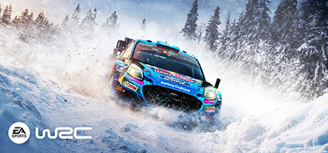
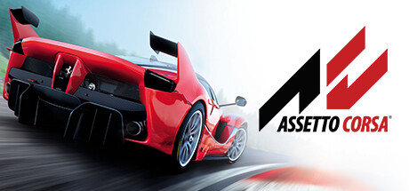

DiRT Rally 2.0

EA SPORTS™ WRC
F1® 24

Assetto Corsa
Los juegos de simulación de carreras son videojuegos que replican de manera detallada la experiencia de conducir vehículos en diversas competiciones, enfocándose en el realismo de la física, el manejo y los entornos.
DiRT Rally 2.0
EA SPORTS™ WRC
F1® 24
Assetto Corsa